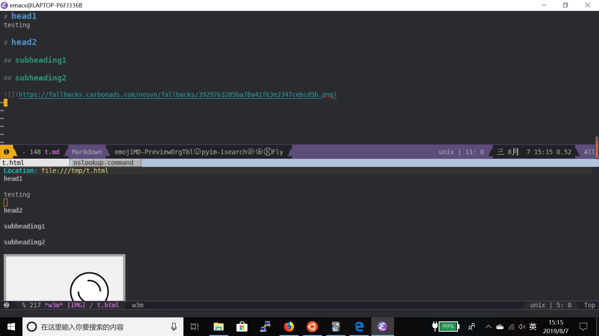

开启markdown预览模式
用了这么久的 markdown-mode,今天才发现它自带了一个 markdown-live-preview-mode 可以在保存 markdown 文件时展示出渲染的HTML样式来。
markdown-mode 本身并不支持将 markdown 文件转换成 html 文件，因此你需要自己安装好一个外部程序帮你完成这个转换（比如markdown,pandoc），同时配置 markdown-command 变量指定该转换程序。
然后，我们只需要在编辑 markdown 文件时运行 M-x markdown-live-preview-mode 就会发现 Emacs 自动帮你生成了一个对应的 html 文件，并用在一个新 buferf 中用 eww 打开了。
生成的 html 文件默认会在关闭 markdown-live-preview-mode 后自动删除，不过你可以通过设置 markdown-live-preview-delete-export 变量来改变删除文件的时点。
另外通过配置 markdown-live-preview-window-function 还能设置用其他浏览器来预览 html 的函数。例如我们可以设置使用 w3m 来预览
(defun markdown-live-preview-window-w3m (file) "Preview FILE with w3m. To be used with `markdown-live-preview-window-function'." (if (require 'w3m nil t) (progn (w3m (concat "file://" file)) (get-buffer "*w3m*")) (error "w3m is not present or not loaded on this version of Emacs"))) (setq markdown-live-preview-window-function 'markdown-live-preview-window-w3m)
效果如下图所示：
